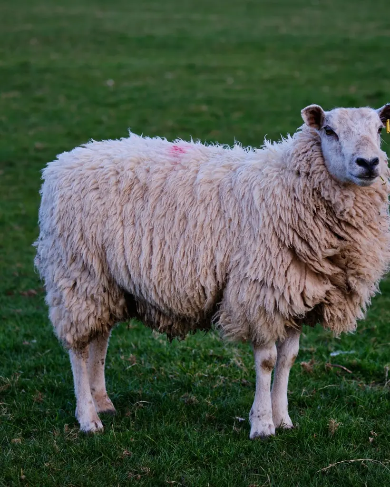
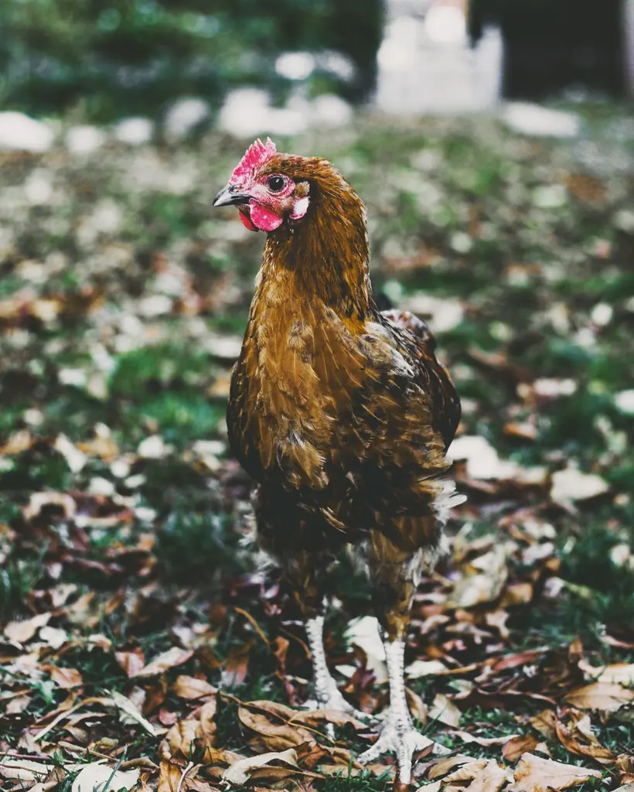

آموزش جیرهنویسی و محاسبه خوراک
راهنماهای فارسی جیرهیار برای ثبت اطلاعات دام، مقایسه هزینه خوراک و خواندن برگه جیره.

جیرهنویسی بره پرواری
اطلاعات گروه، خوراک و قیمتهایی که برای مقایسه باید ثبت کنید.
راهنمای جیرهنویسی بره پرواری
جیرهنویسی مرغ گوشتی
چطور مرحله پرورش و مبنای آنالیز را هنگام مقایسه ثابت نگه دارید.
راهنمای جیرهنویسی مرغ گوشتی